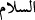

meleklerin kıblesi yapmıştır. Kelime mânâsıyla buradaki secde, meleklerin Âdem’e
tevâzu ve saygı göstermeleridir. Kardeşlerinin Yûsuf’a secde etmelerinde de aynı mânâ
kasdedilmiştir. Selâmlamak için yapılan secde câizdi, ancak Peygamberimiz (s.a.)
Selman (r.a.) kendisine secde etmek isteyince: “Hiçbir mahlûkun Allah Teâlâ dışında
birine secde etmesi gerekmez. Şâyed bir kişinin diğerine secde etmesini emretseydim,
hanımın kocasına secde etmesini emrederdim.”[239] buyurmuştur. Bu ümmetin selâmı, (
) lâfzıdır. Dürer adlı fıkıh kitabında belirtildiği gibi baş eğerek selâmlama
mekruhtur. Çünkü bu Yahûdîlerin selâmlaşmasına benzer.
Bu âyet, Âdem’in meleklere isimleri bildirmesinden sonra inmiştir. Rivâyete göre
Âdem (a.s.) yaratılınca melekler kendilerinin mi yoksa O’nun mu daha bilgili olduğu
husûsunda şüpheye düştüler. Melekler cevap veremeyip Âdem verince Allah Teâlâ
meleklere, Âdem’e secde etmeyi emretti. Böylece Âdem’in daha üstün olduğu
anlaşılmış oldu. Meleklerin Âdem’e secde ile emrolunması Âdem’in de Allah’dan
başkasına secde etmesinin yasaklanması Allah Teâlâ’nın bizlere bir lütfudur. Zira O,
“Ne güneşe, ne aya secde etmeyin, onları yaratan Allah’a secde edin.” (Fussılet,
41/37) buyurmaktadır. Böylece O, mukarreb melekleri bile bize secde ettirirken, bizi
ancak kendine secde ettirmiş, bizi kendi hizmetine almıştır.
“Secde ediniz” emrine et-Te’vîlâtü’n-Necmiyye adlı eserde şu üç değişik mânâ
verilmiştir:
1-) Ey melekler, siz Allah’a meleklik tabîatınız ve rûhâniyetiniz icâbı secde
ediyorsunuz. Âdem’e secde etmekle de Allah’ın emirlerini şuûrla yerine getirmeyi
öğreniniz.
2-) Âdem’e, hilâfeti sebebiyle kendine mahsûs üstünlüğüne ihtirâm için secde edin.
Çünkü Allah Teâlâ onda tecellî eder. Ona secde eden, Allah’a secde etmiş olur. Nitekim
Allah Teâlâ, habîbî Muhammed Mustafâ (s.a.) hakkında “Sana bey’at edenler, ancak
Allah’a bey’at etmiştir” (el-Feth, 48/10) buyurmaktadır.
3-) Âdem’in Hak katında terakkîsi için ona secde edin; çünkü onun ibâdeti, bu konuda
yeterli değildir. Bu secdenin insana faydası iki şekilde olacaktır.
Birincisi; İnsan melekleri örnek alarak onlar gibi Allah’a ibâdet edecek, onlar gibi
edeblenecektir. Şeytanın büyüklenip isyân ederek Allah katından kovulması gibi,
lâ’netlenmiş bir duruma düşmeyecek, aksine melekler gibi makbûl, memdûh ve
mükerrem olacaktır. Allah Teâlâ melekleri överek “(o melekler) Allah’ın buyruğuna
karşı gelmez ve emredildiklerini yaparlar.” (et-Tahrîm, 66/6)
İkincisi; Allah Teâlâ, insana olan sonsuz rahmet ve ihsânından dolayı itâat, tesbih ve
hamd husûsunda melekleri onun yardımına göndermiştir. Onların insana himmet etmesini
sağlamıştır. Allah Teâlâ: “Melekler de Rablerini hamd ile tesbih ediyorlar ve
yerdekiler için mağfiret diliyorlar.” (eş-Şûrâ, 42/5) buyurmaktadır.
Bu yüzden Allah Teâlâ, meleklere insanoğlu için secde etmesini, istiğfârda
bulunmasını emretmiştir. Nûrdan yaratıldıkları için bütün melekler secde ettiler.